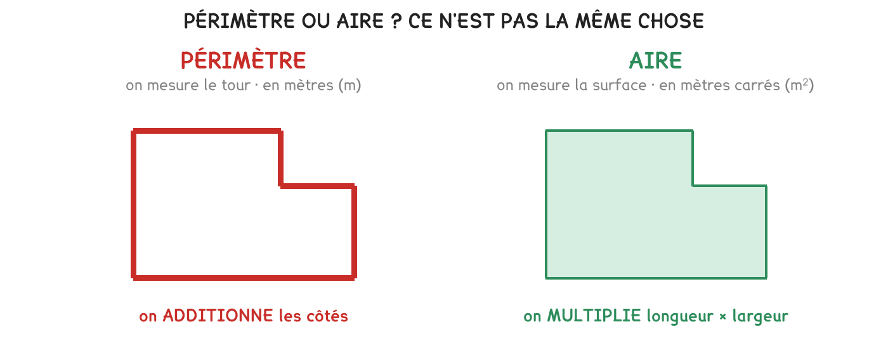

GE Géométrie — périmètre et aire des figures usuellesCN Calculs numériques
La méthode, en quatre temps
Le périmètre, c’est le tour : je l’obtiens en additionnant les côtés.
L’aire, c’est la surface : pour un rectangle, longueur × largeur.
Le périmètre se compte en mètres, l’aire en mètres carrés.
Je vérifie : c’est l’unité qui dit lequel des deux j’ai calculé.

Avant de calculer, demandez-vous ce qu’on achète. Du grillage, une plinthe, une bordure : c’est le tour, donc des mètres. Du gravier, des dalles, de la peinture : c’est la surface, donc des mètres carrés.
Une plateforme de 8 m sur 5 m
Ce que je cherche
Le calcul
Résultat
le périmètre
8 + 5 + 8 + 5
26 m
l’aire
8 × 5
40 m²
le périmètre d’un carré de 6 m
6 × 4
24 m
l’aire de ce carré
6 × 6
36 m²
On additionne seulement deux côtés. 8 + 5 fait 13, pas 26 : un rectangle a quatre côtés, et le tour les compte tous. Le raccourci sûr est (longueur + largeur) × 2.
Pour aller plus loin
Même aire, périmètres très différentsPour aller plus loin›
Deux plateformes de 135 m² : l’une fait 15 m sur 9 m, l’autre 27 m sur 5 m. La surface est la même, le tour ne l’est pas, 48 m dans le premier cas, 64 m dans le second.
Sur un devis, l’écart se chiffre : à 12 € le mètre de grillage, c’est 576 € contre 768 €. 192 € pour la même surface utile.
C’est pourquoi on cherche des formes compactes quand on doit clôturer, et pourquoi le carré est la forme qui, à aire donnée, a le plus petit périmètre.
Je m’entraîne
Les mêmes séries que sur la feuille. On remplit chaque case, puis on vérifie la série entière d’un coup.
Série · GE
Série 1, le périmètre d’un rectangle
5 m × 3 m
10 m × 2 m
7 m × 7 m
12 m × 4 m
On fait le tour : deux fois la longueur plus deux fois la largeur.
Série · GE
Série 2, l’aire des mêmes rectangles
5 m × 3 m
10 m × 2 m
7 m × 7 m
12 m × 4 m
Longueur multipliée par largeur. Comparez avec la série 1 : les deux dernières lignes ne se ressemblent plus du tout.
Série · GE
Série 3, périmètre ou aire
grillager le tour d’un terrain
empierrer une plateforme
poser une plinthe au bas des murs
commander des dalles
Ce qui longe se compte en mètres, ce qui couvre se compte en mètres carrés.
Le quiz
Un résultat en m² est : un périmètre | une aire
Grillager le tour d’un terrain, c’est : un périmètre | une aire
Commander des dalles, c’est : un périmètre | une aire
Le périmètre d’un rectangle de 8 m sur 5 m vaut : 13 m | 26 m | 40 m
À vous
Une plateforme mesure 15 m sur 9 m. On doit la grillager sur tout son tour et l’empierrer entièrement.
Exercice · GE
Le grillage à commander
Quelle longueur de grillage faut-il ?
Le tour, donc les quatre côtés. Ou (longueur + largeur) × 2.
Exercice · GE
La surface à empierrer
Quelle surface faut-il empierrer ?
Longueur × largeur. Le résultat se compte en mètres carrés.
Exercice · GE
Le prix du grillage
Le grillage coûte 12 € le mètre. Combien coûte-t-il en tout ?
C’est la longueur du tour qu’on multiplie, pas la surface.
Exercice · GE
Le prix de l’empierrement
L’empierrement coûte 8 € le mètre carré. Combien coûte-t-il ?
Cette fois c’est la surface. L’unité du prix vous dit laquelle des deux prendre.
Pour les plus courageux
Même surface, autre forme, et la facture qui change.
Exercice · GE
La plateforme en longueur
Une autre plateforme a la même surface de 135 m², mais mesure 27 m sur 5 m. Quel est son périmètre ?
Même méthode, autres dimensions. Comparez au périmètre de la première.
Exercice · GE
Laquelle coûte le plus cher à clôturer
Les deux plateformes ont la même surface. Coûtent-elles la même chose à grillager ? Chiffrez l’écart, à 12 € le mètre.
Multipliez chaque périmètre par 12, puis soustrayez. L’écart n’est pas nul.
J’ai donné les deux périmètres
J’ai calculé les deux prix de grillage
J’ai donné l’écart en euros
Fiche de consolidation. Aucun corrigé ; rien n'est enregistré, rien n'est noté.